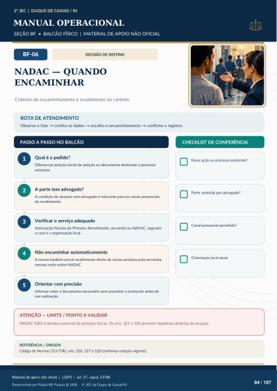

DECISÃO DE DESTINO
NADAC — QUANDO
ENCAMINHAR
Critérios de encaminhamento e recebimento no cartório
ROTA DE ATENDIMENTO
Observe o fato → confira os dados → escolha o encaminhamento → confirme o registro.
PASSO A PASSO NO BALCÃO
CHECKLIST DE CONFERÊNCIA
Qual é o pedido?
Diferenciar petição inicial de petição ou documento destinado a processo existente.
A parte tem advogado?
A condição de atuação sem advogado é relevante para os canais presenciais de recebimento.
Verificar o serviço adequado
Atermação/Núcleo de Primeiro Atendimento, serventia ou NADAC, segundo o caso e a organização local.
Não encaminhar automaticamente
A norma também prevê recebimento direto de certas petições pela serventia, mesmo onde existe NADAC.
Orientar com precisão
Informar setor e documento necessário sem prometer o protocolo antes de sua realização. Nova ação ou processo existente? Parte assistida por advogado? Canal presencial permitido? Orientação local atual
ATENÇÃO — LIMITE / PONTO A VALIDAR
NADAC NÃO é destino universal de petições físicas. Os arts. 327 e 328 preveem hipóteses distintas de atuação.
REFERÊNCIA / ORIGEM
Código de Normas CGJ/TJRJ, arts. 326, 327 e 328 (confirmar redação vigente).
Ver também o infográfico original (página 84)
